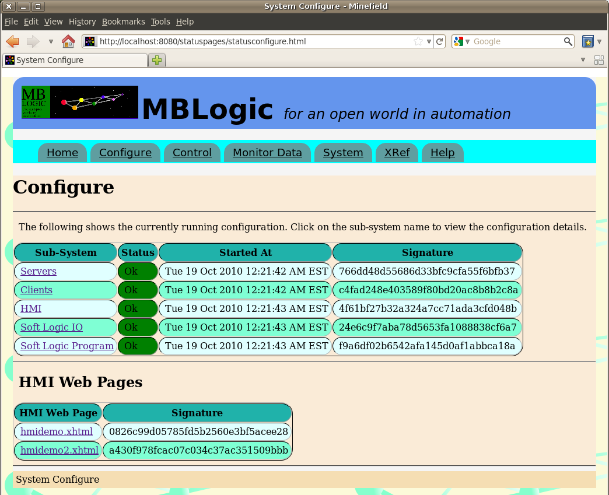

MBLogic
for an open world in automation
MBLogic
for an open world in automation
Help - Configure Summary
Overview
The "Configure Summary" page provides with a quick overview of the state of the running configuration of each of the sub-systems.
Configurations
The available system configurations are:
- Servers
- Clients
- HMI
- Soft logic IO
- Soft logic program

The sub-systems are displayed in a table with the following items for each.
- Sub-system name. Click on the name to open a page with more details.
- Status. This contains a text and colour coded background to indicate the current status of each sub-system.
- Started at. This is the time the sub-system was started.
- Signature. This is an MD5 checksum of the configuration. This checksum may be recorded and compared later to determine if any changes have been made to the configuration files.
HMI Web Pages
Also displayed are any web pages contained in the HMI web page directory. This shows the pages that were present when the configure web page was requested. To update the list, refresh the configure web page. The HMI web page information includes:
- The web page file name. Click on the name to open the HMI web page.
- Signature. This is an MD5 checksum of the web page. This checksum may be recorded and compared later to determine if any changes have been made to the HMI web page files.